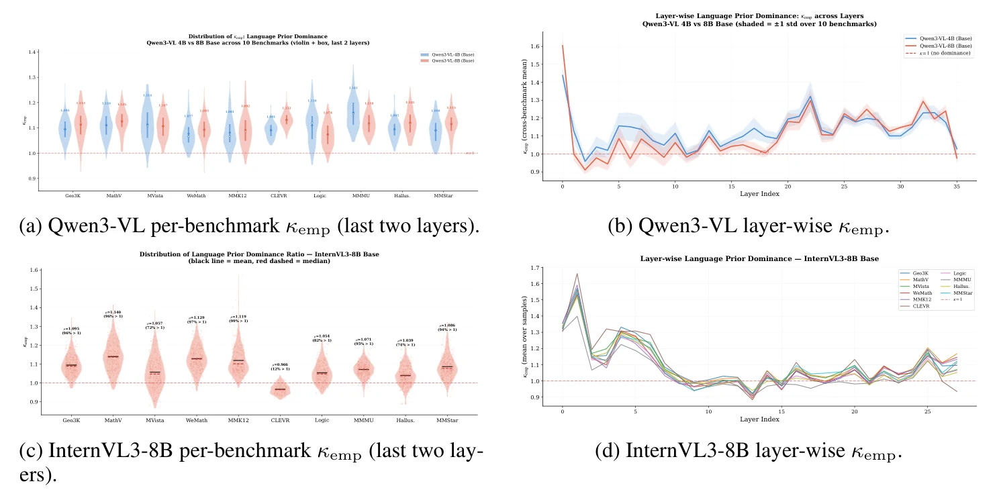
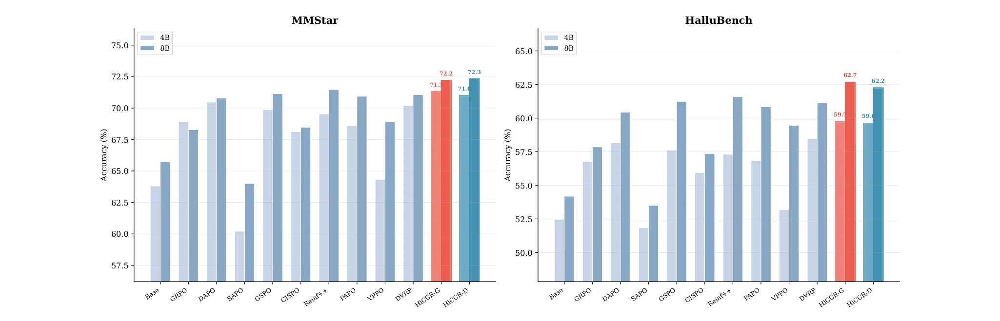
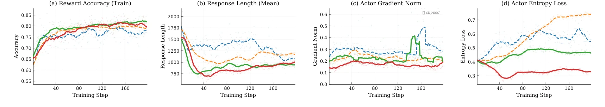
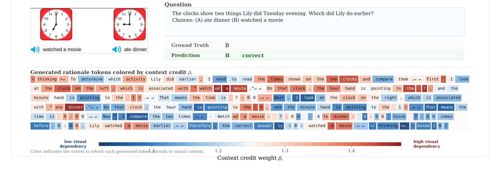
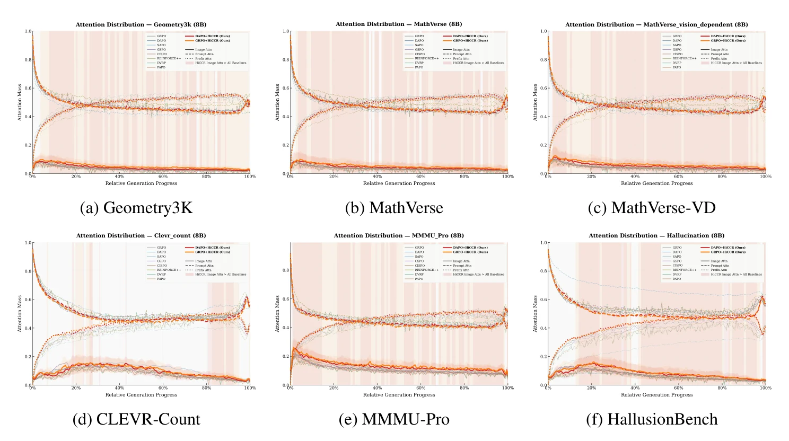
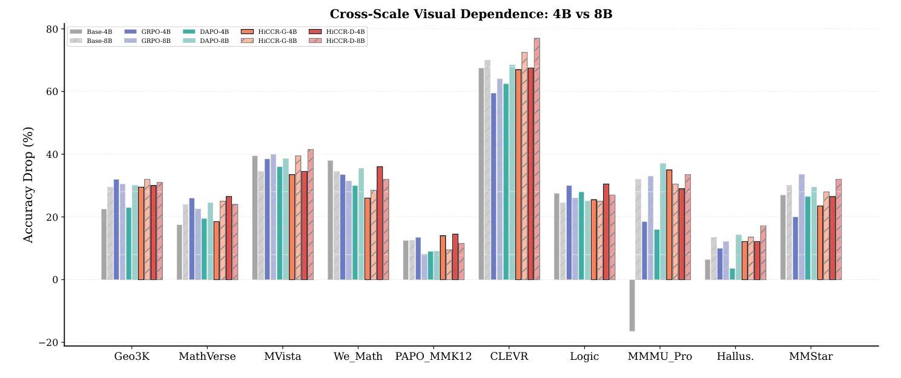

Not All Tokens Should Be Treated Equally
Context Credits Reassignment
1Institute of Trustworthy Embodied AI, Fudan University · 2Shanghai Innovation Institute · 3ByteDance TikTok · 4Zhejiang University · 5Wuhan University
* Equal contribution ‡ Project lead † Corresponding authors
Multimodal RLVR gives every token the same advantage. HiCCR reweights it by how much each token, and each rollout, actually looks at the image.
Qwen3-VL-4B
Uniform credit is not even locally optimal
GRPO and DAPO give one trajectory-level advantage  to every generated token, whether the token reads a clock hand from the image or just writes “Therefore”.
Our first experiment is a sanity check. We take the advantage that RLVR gives each token and multiply it by random noise wt ∼ 𝒩(1, 0.2²). The noise carries no information.
It still beats uniform credit on all four configurations: GRPO and DAPO, on both Qwen3-VL-4B and 8B. If uninformative non-uniformity helps, then uniform credit leaves gains on the table. The real question is which non-uniform signal to use.
RLVR under uniform credit weakens visual grounding
Uniform credit is also not neutral. Compared with the base model, models after GRPO or DAPO training rely less on the image. We see this along three complementary axes.
Attention
Image attention mass drops as generation proceeds. Uniform RLVR speeds up the drift.
Gradient attribution
Measured with Input×Gradient: the share of attribution that goes to image tokens shrinks.
Functional dependence
Zero out the image embeddings and measure the accuracy drop. RLVR models drop less, so they depend less on vision.

Uniform credit amplifies a bias pretraining already put in place
Pretrained VLMs already favor language priors. Pushing a single positive advantage through every token turns that asymmetry into a gradient imbalance, and the imbalance into attention drift.
Language-prior dominance
Non-visual context has larger downstream-projected activation magnitude than visual context:
Measured with full forward–backward passes on Qwen3-VL-4B/8B and InternVL3-8B across all benchmarks.
Gradient-budget bias
For a positive-advantage update with uniform credit  > 0, the non-visual gradient contribution to WQ strictly exceeds the visual one on text-dominant steps:
Local visual-attention drift
To first order, the visual attention mass changes as
It therefore decreases whenever the same-step drift Dt dominates the cross-step term |Rt|.

Hierarchical Context Credit Reassignment
One attention hook gives a per-token visual-concentration score. That score sets two weights: a token-level weight βt and a trajectory-level weight α(i). Both reshape the advantage of correct rollouts only.

For each generated token we look only at its attention over the visual positions 𝒱 and renormalize it there. The score is visual information concentration: one minus the normalized entropy of that distribution.
A token that locks onto a few image patches (a clock hand, a vertex) scores high. A token whose image attention is diffuse scores low. The score is averaged over heads and the last two layers, with τ = 0.5.
The scores are z-scored within each sequence and passed through a sigmoid. The result is a smooth, bounded multiplier: every token keeps its gradient, and visually grounded tokens get up to 1 + λtok times more.
Unlike top-k masking, nothing is thrown away, and there is no masking ratio to tune. Default λtok = 0.5.
Among the rollouts sampled for one prompt, those with stronger overall visual engagement are more likely to be right for the right reason. TAR min–max scales each trajectory's mean credit into a weight in [1, 2].
Credit is reassigned only for correct rollouts. Wrong rollouts keep their uniform negative advantage. Reshaping both signs would punish incorrect rollouts that happened to look hard at the image, mixing up visual engagement with failure. The symmetric variant loses 5.1 / 4.0 points (Table 10).
Credit lens · a real rollout from Qwen3-VL-8B
Q. The clocks show two things Lily did Tuesday evening. Which did Lily do earlier? (A) ate dinner (B) watched a movie · Prediction: B ✓
Best AVG@8 in every matched pair, against nine RLVR baselines
ViRL39K training, G = 5 rollouts, AVG@8 on nine reasoning benchmarks. All baselines were re-run in the same environment under the same conditions.
AVG@8 (%). Grey bars: other RLVR baselines. Darker grey: the matched base algorithm. Red: HiCCR-G (on GRPO). Blue: HiCCR-D (on DAPO). The axis starts at 45.
Per-benchmark breakdown
| Mathematical reasoning | General & logical reasoning | |||||||||||
|---|---|---|---|---|---|---|---|---|---|---|---|---|
| Method | Geo3K | MVerse | MVista | WeMath | MV-V | Avg. | MMK12 | Clevr | Logic | MMMU | Avg. | AVG@8 |
Small model, frontier-level aggregate
On the same nine benchmarks, the 8B HiCCR-D model scores 72.76%. That is above Qwen2.5-VL-72B, InternVL2.5-78B and LLaVA-OV-72B, and above the proprietary GPT-4o and Gemini-2.0-flash (Table 7).
The largest gains appear on the most vision-dependent benchmarks, such as MathVerse and MathVerse-Vision. This is consistent with the hypothesis that uniform credit mostly hurts visually grounded reasoning.
AVG@8 · 9 benchmarks (Table 7)
A ladder of credit signals
Is the gain just from being non-uniform? No. We swap the score for five alternatives under identical training. Random beats Uniform, but time-decay and entropy masks are unreliable. HiCCR-T uses the same formula over the text context and often ends up below Uniform. Raw attention energy over visual tokens, with no intra-visual normalization, beats every heuristic but still trails the full score. Concentration over the visual subset is what matters.
Bars show the change in AVG@8 relative to Uniform (vertical line). Table 2.
Holds across architectures, data and tasks
We swap the backbone family, shrink the training data to a single geometry set, and test perception and hallucination benchmarks HiCCR never trained on.
Another architecture · InternVL3-8B (Table 6)
| Pair | Base RL | + HiCCR | Δ |
|---|---|---|---|
| GRPO → HiCCR-G | 55.47 | 58.68 | +3.21 |
| DAPO → HiCCR-D | 57.48 | 60.71 | +3.23 |
Different vision encoder, connector and language prior. Base Instruct model: 47.47.
Less data · trained on Geo3K only (Table 5)
| Setting | Base RL | + HiCCR | Δ |
|---|---|---|---|
| 4B · GRPO | 54.01 | 56.69 | +2.68 |
| 4B · DAPO | 51.48 | 54.65 | +3.17 |
| 8B · GRPO | 58.89 | 62.07 | +3.18 |
| 8B · DAPO | 58.58 | 61.41 | +2.83 |

Almost free: +2.7% time, no extra backward pass
The credit score reuses the queries and keys already computed in the forward pass. Perturbation-based PAPO needs a second backward pass.
| Qwen3-VL-8B | s / step | Peak mem. | AVG@8 |
|---|---|---|---|
| GRPO | 619 | 115.8 GB | 62.49 |
| HiCCR-G | 636 +2.7% | 121.0 GB +4.5% | 67.19 +4.70 |
| DAPO | 634 | 118.1 GB | 68.29 |
| HiCCR-D | 651 +2.7% | 123.4 GB +4.5% | 72.76 +4.47 |
| PAPO | 782 +26.3% | 129.7 GB +12% | 70.25 |
Every design choice, stress-tested
The two levels complement each other. Soft weighting beats hard masking. Later layers give better signals. Asymmetry matters. The method is not sensitive to λtok.
TCR and TAR are complementary
Each level helps alone. Together they do best (Table 3).
| Setting | Base | +TCR | +TAR | Both |
|---|---|---|---|---|
| 4B · DAPO | 67.58 | 68.84 | 68.15 | 68.95 |
| 8B · GRPO | 62.49 | 66.56 | 64.73 | 67.19 |
Soft weighting > hard top-k masking
Masking discards gradient from partly informative tokens. Top-20% even hurts (Table 8, DAPO).
| Uniform | Top-20% | Top-40% | HiCCR | |
|---|---|---|---|---|
| 4B | 67.58 | 65.21 | 67.65 | 68.95 |
| 8B | 68.29 | 67.93 | 68.87 | 72.76 |
Asymmetric > symmetric shaping
Reshaping negative rollouts too would penalize visual engagement on wrong answers (Table 10, GRPO).
| Symmetric | Asymmetric | Δ | |
|---|---|---|---|
| 4B | 64.80 | 69.94 | +5.14 |
| 8B | 63.19 | 67.19 | +4.00 |
Later layers give better credit
The last layers are where the model commits to its reasoning. Credit should follow where visual information is acted on (Table 9, 4B GRPO).
Low sensitivity to λtok
Gains hold across 0.5 to 0.8. Too small approaches Uniform, and 1.5 over-amplifies (Table 11, 4B DAPO; Uniform = 67.58).
Visual gradient attribution recovered
Share of Input×Gradient attribution on image tokens (%, Table 12).
| Base | GRPO | DAPO | HiCCR-G | HiCCR-D | |
|---|---|---|---|---|---|
| 4B | 25.0 | 23.9 | 22.7 | 25.8 | 26.1 |
| 8B | 22.0 | 24.2 | 20.8 | 26.1 | 22.4 |

Credit goes to the tokens that look
HiCCR gets no token-level supervision. Its highest credit still lands on geometry and diagram tokens, early in the reasoning, where the scaffold is set up.

Case studies
Red marks high-credit tokens, the ones that read the image: the hand position, a shaded cell, a row of cans. Blue marks low-credit tokens, the ones that compute or connect.





What HiCCR does not claim
- Verifiable rewards. HiCCR is built on RLVR. Open-ended or preference-based rewards are not covered.
- Attention access. It needs the policy's queries and keys, so it targets open-weight models.
- A proxy, not causal saliency. Visual concentration is a lightweight estimate of visual dependence. It is not a causal attribution.
- Image only. Video and audio modalities are left for future work.
- Local theory. Theorems B.3–B.4 are first-order, sufficient-condition results for small updates.
BibTeX
@inproceedings{gao2026hiccr,
title = {Not All Tokens Should Be Treated Equally:
Context Credits Reassignment},
author = {Gao, Shujian and Wang, Yuan and Yan, Jiamei and
Zhou, Penghao and Wang, Qinglei and Yan, Jiangtao and
Wu, Zuxuan and Jiang, Yu-Gang},
booktitle = {Advances in Neural Information Processing Systems},
year = {2026}
}
The arXiv preprint and code will be released soon. Watch this repository for updates.